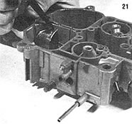

[21] Cut a section of 1-1/2"" thinwall sink drain to about 3-1/2"" in length (you can use either a straight or an elbow fitting, depending on where your wood-gas feed hose enters the engine compartment), then slip it into the opening and mark a cutting line on both its sides, using the carburetor's walls as a guide.